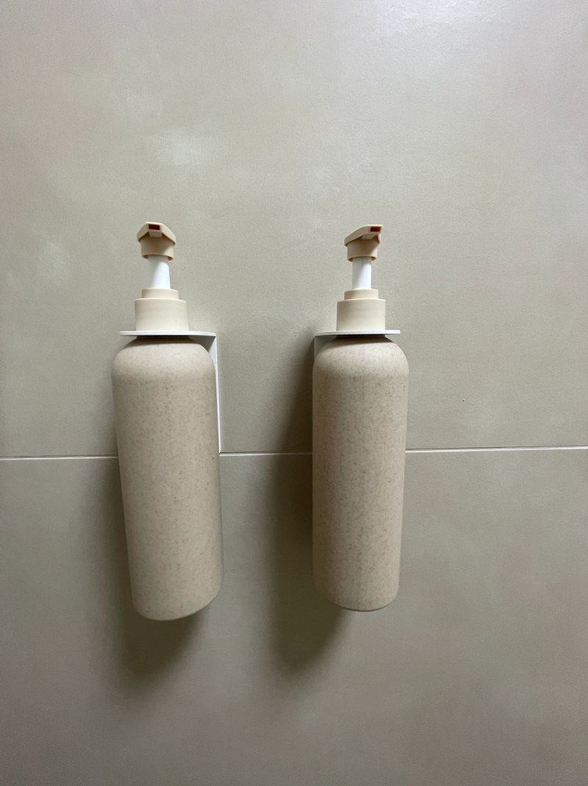
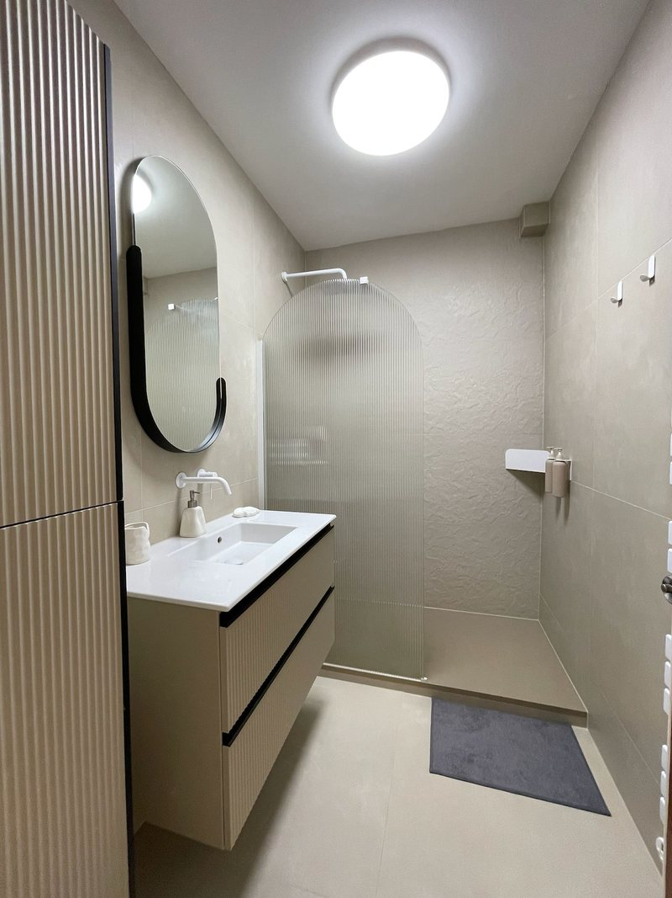

Appartement design · Illkirch-Graffenstaden
Cocon — Illkirch-Graffenstaden
Appartement de 120 m² à Illkirch-Graffenstaden, au sud de Strasbourg, tramway direct vers le centre-ville.
Vos dates, votre prix
Choisissez vos dates : le prix exact s'affiche
Disponibilités et prix en direct de notre calendrier de réservation, pour Cocon. Vous réservez ici, sans frais Airbnb.
Le prix dépend des dates : il s'affiche dès que vos deux dates sont choisies.
Réservation sur notre site, sans frais Airbnb. Une question ? Écrivez-nous.
Le logement, en photos
Photos de l'annonce Airbnb · 12 vues







L'essentiel à savoir
Appartement de 120 m² à Illkirch-Graffenstaden, au sud de Strasbourg, tramway direct vers le centre-ville.
Illkirch-Graffenstaden, au sud de Strasbourg, tramway direct vers le centre-ville. L'adresse exacte est communiquée après la réservation.
Équipements
- 120 m²
- Chambres avec lits queen et simples
- Cuisine équipée, four, micro-ondes
- Balcon
- Wi-Fi
- Lave-linge et sèche-linge
- 2ᵉ étage sans ascenseur
À proximité
- Tramway direct vers Strasbourg
- Centre d'Illkirch à pied
- Places gratuites dans les rues alentours
- Strasbourg à 15 min
Où ça se trouve
Illkirch-Graffenstaden
Illkirch-Graffenstaden, au sud de Strasbourg, tramway direct vers le centre-ville. L'adresse exacte est communiquée après la réservation.
Illkirch-Graffenstaden, south of Strasbourg, with a direct tram to the city centre. Exact address shared after booking.
Questions-réponses
Avant de réserver
Combien de voyageurs, quelle surface ?
Jusqu'à 6 voyageurs · 120 m² · balcon.
Quelles sont les heures d'arrivée et de départ ?
Arrivée à partir de 15 h, départ avant 11 h. L'arrivée est autonome : les codes et les instructions arrivent avant votre venue.
Quel est l'étage ? Y a-t-il un ascenseur ?
2ᵉ étage sans ascenseur.
Où peut-on se garer ?
Des places de parking gratuites se trouvent dans les rues autour de l'immeuble.
Y a-t-il un lave-linge ?
Oui, avec un sèche-linge.
Les animaux sont-ils acceptés ?
Pas par défaut : demandez-nous avant de réserver.
Y a-t-il un lit bébé ?
Selon disponibilité : demandez-nous avant de réserver.
Comment se passe l'arrivée ?
Arrivée 100 % autonome : serrure connectée Igloohome ou boîte à clés selon le logement. Les codes, photos et instructions sont envoyés avant l'arrivée.
Le linge est-il fourni ?
Oui : draps et serviettes fournis dans tous nos logements (1 serviette par voyageur).
Y a-t-il le Wi-Fi ?
Oui, le Wi-Fi est gratuit dans tous nos logements (fibre au Studio Cathédrale, à Colmar et à Erstein).
Quelle est la politique d'annulation ?
Non remboursable moins de 30 jours avant l'arrivée. L'option « annulation prolongée » Airbnb (petit supplément) permet d'annuler gratuitement jusqu'à 24 h avant.
Peut-on fumer ?
Non, tous nos logements sont non-fumeurs à l'intérieur.
Comment réserver sans passer par Airbnb ?
Sur la page du logement, indiquez vos dates : le prix exact s'affiche en direct et la réservation se fait sur notre site, sans frais de plateforme. Vous pouvez aussi nous écrire avec le formulaire de contact.
Comment le prix est-il calculé ?
Il dépend des dates et du nombre de nuits. Choisissez vos dates d'arrivée et de départ : le prix de votre séjour s'affiche aussitôt, en direct depuis notre calendrier de réservation (nuits + éventuels frais de ménage).
Réserver en direct, ça change quoi ?
Vous réservez directement sur notre site : pas de frais de voyageur Airbnb ajoutés, et un échange direct avec nous.
Vos dates, votre prix
Choisissez vos dates, le prix s'affiche tout de suite
Le calendrier est celui de Cocon : les dates déjà réservées n'apparaissent pas. Le prix affiché est le prix final, ménage compris.
- Réservation directe : pas de frais de plateforme
- Annulation : non remboursable à moins de 30 jours
- Arrivée 15:00 · départ 11:00
Une question, une date en tête ?
Écrivez-nous, on répond vite
Dites-nous vos dates, le nombre de voyageurs et ce qui compte pour vous. Réponse par e-mail, en général dans la journée.
Illkirch-Graffenstaden · arrivée autonome